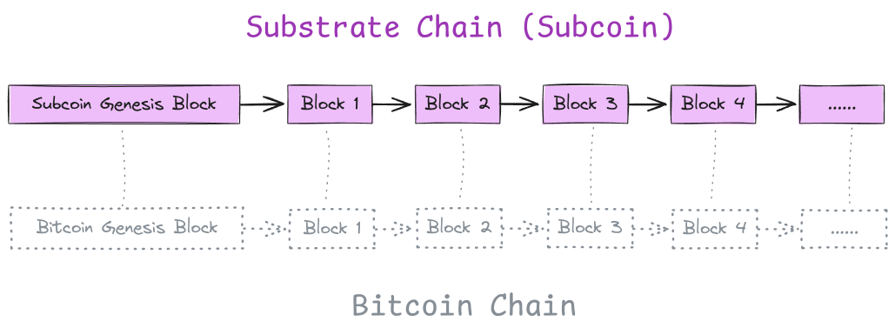

Subcoin
Subcoin is Bitcoin full node written in Rust using the Substrate framework
Subcoin's most significant contribution is introducing decentralized fast sync to the Bitcoin ecosystem. Unlike traditional initial full sync, which require processing every historical block and replaying all past transactions, fast sync downloads the state at a specific block and begins normal block sync from that point.
Resources
Architecture
Overview
Subcoin operates similarly to how a Layer 2 chain is derived from a Layer 1 chain in a modular blockchain architecture. Each Subcoin block is deterministically derived from the corresponding Bitcoin block at the same height, faithfully replicating Bitcoin's transaction logic (Money Transfer).
The Bitcoin state (UTXO Set) is embedded within the Subcoin state, which includes a commitment to the global chain state (state_root). Effectively, Subcoin functions like Bitcoin with an added state root for the global Bitcoin state. This state_root enables possibilities like decentralized fast sync, without requiring any modifications to the Bitcoin protocol.
Additionally, Subcoin serves as an ideal testbed for new Bitcoin features, which are often challenging to land on the Bitcoin mainnet due to its stability and conservative development process. Developers can experiment with new innovations and features on Subcoin in a live environment without affecting the Bitcoin mainnet.
Subcoin is not a new blockchain but a replica of the Bitcoin chain with additional functionality, such as decentralized fast sync and flexibility for testing new features.
Code Map
This section provides a brief overview of key directories and data structures in the project.
crates/pallet-bitcoin
This pallet is responsible for tracking the state of the UTXO Set. Transaction verification is deliberately excluded from this pallet, with all verifications handled on the client side through sc-consensus-nakamoto.
crates/sc-consensus-nakamoto
This crate manages the processing and importing of Bitcoin blocks into the database, whether they are sourced from a local Bitcoin Core database or downloaded via the P2P network.
BitcoinBlockImporter: Processes and imports blocks into the database.BlockImportQueue: Bridges blocks downloaded from the Bitcoin P2P network to BitcoinBlockImporter.
crates/subcoin-network
This crate handles downloading Bitcoin blocks from the Bitcoin P2P network. The downloaded blocks are sent to the import queue, running in a separate task for processing. Block processing results are communicated back to ensure seamless integration.
crates/subcoin-runtime
This is a minimal Substrate runtime, composed of frame-system and pallet-bitcoin, which defines the core business logic of Subcoin chain.
crates/subcoin-node
The entry point for the Subcoin node is located at crates/subcoin-node/src/bin/subcoin.rs, which initializes and runs the node.
Import Blocks from Bitcoin Core Database
If you already have a Bitcoin Core node with -txindex flag enabled, you can import the blocks from the Bitcoin Core database instead of downloading from the network.
Get the bitcoind Binary
To have flexible control over bitcoind behavior, it’s recommended to compile the bitcoind binary from source rather than downloading it directly from Bitcoin releases which do not conveniently expose developer-oriented options. You can find the build instructions for your operating system under build-*.md in the Bitcoin repository. For Linux, refer to build-unix.md.
# Ensure these two commands exist after successfully compiling the Bitcoin Core source code.
./src/bitcoind --help
./src/bitcoin-cli --help
Next, start a bitcoind node with txindex and coinstatsindex enabled. txindex is necessary for importing blocks into Subcoin, and coinstatsindex is required to query and verify the UTXO set of a specific block later. For example, use /tmp/btc-data as the data directory:
mkdir -p /tmp/btc-data && ./src/bitcoind -datadir=/tmp/btc-data -txindex -coinstatsindex
Keep the bitcoind process running for a while to ensure it has synchronized a number of blocks. Note that bitcoind will first synchronize the block headers and only start downloading blocks after the headers are synced. This step might take some time depending on the peer connections (10+ minutes on my machine).
...
2024-07-11T17:23:10Z UpdateTip: new best=00000000000008c273c4c215892eacbafec33c199cfd3d9b539cdb6aafc39f54 height=142979 version=0x00000001 log2_work=66.385350 tx=1392173 date='2011-08-29T01:23:19Z' progress=0.001342 cache=33.0MiB(304442txo)
...
Stop the bitcoind process and proceed to import the blocks from the bitcoind database into Subcoin.
Run subcoin import-blocks
Ensure you have installed subcoin. If not, refer to installation to install the subcoin binary.
# Specify `subcoin-data` as the data directory for Subcoin and import the blocks from
# `/tmp/btc-data` which is the `bitcoind` database we set up earlier.
#
# `--state-pruning archive` is necessary for querying the state of the UTXO set later.
subcoin import-blocks /tmp/btc-data -d subcoin-data --state-pruning archive
You should see output similar to this:
2024-07-12 01:28:51 🔨 Initializing Genesis block/state (state: 0x1c68…f3f8, header-hash: 0xbdc8…a76b)
2024-07-12 01:28:53 🏁 CPU score: 1.15 GiBs
2024-07-12 01:28:53 🏁 Memory score: 13.87 GiBs
2024-07-12 01:28:53 🏁 Disk score (seq. writes): 1.77 GiBs
2024-07-12 01:28:53 🏁 Disk score (rand. writes): 678.77 MiBs
2024-07-12 01:28:53 Start loading block_index
2024-07-12 01:28:53 Successfully opened tx_index DB!
2024-07-12 01:28:53 Start to import blocks from #1 to #142984 from bitcoind database: /tmp/btc-data
2024-07-12 01:28:54 Imported 1000 blocks, best#1001,00000000a2887344f8db859e372e7e4bc26b23b9de340f725afbf2edb265b4c6 (0x3ff4…6eb5)
...
By default, Subcoin will import all blocks up to the latest indexed Bitcoin block in the bitcoind database. You can specify the total number of blocks to import or the target number of blocks to import:
# Import 20000 blocks from the best block of Subcoin.
subcoin import-blocks /tmp/btc-data -d subcoin-data --block-count 20000
# Import blocks up to height 30000.
subcoin import-blocks /tmp/btc-data -d subcoin-data --end-block 30000
NOTE:
The
bitcoindprocess must be stopped when running the import-blocks command, otherwise you will encounter the following error:Error: Application(OpError { kind: None, message: "LevelDB error: IO error: lock /tmp/btc-data/blocks/index/LOCK: Resource temporarily unavailable" })
Verify the UTXO Set State
bitcoind provides an interface to inspect the UTXO set state. This can be used to check the correctness of Subcoin’s UTXO set after importing blocks. For example, to export the UTXO set of bitcoind at height 10000:
# Note that running this command requires the bitcoind process running in the background.
# If it was stopped, now restart it. You can stop it again after this command finishes.
./src/bitcoin-cli -datadir=/tmp/btc-data gettxoutsetinfo muhash 10000
{
"height": 10000,
"bestblock": "0000000099c744455f58e6c6e98b671e1bf7f37346bfd4cf5d0274ad8ee660cb",
"txouts": 9494,
"bogosize": 1109244,
"muhash": "5a7c3a051a26d8cf61722f28fbbd3f0c2678698d008e5b7ec01e28a131c58def",
"total_amount": 500000.00000000,
"total_unspendable_amount": 50.00000000,
"block_info": {
"prevout_spent": 0.00000000,
"coinbase": 50.00000000,
"new_outputs_ex_coinbase": 0.00000000,
"unspendable": 0.00000000,
"unspendables": {
"genesis_block": 0.00000000,
"bip30": 0.00000000,
"scripts": 0.00000000,
"unclaimed_rewards": 0.00000000
}
}
}
Check the state of the UTXO set in Subcoin at the same height:
# Note that the existing `gettxoutsetinfo` only displays a subset of the information in `bitcoind`.
subcoin blockchain gettxoutsetinfo --height 10000 -d subcoin-data
{
"height": 10000,
"bestblock": "0000000099c744455f58e6c6e98b671e1bf7f37346bfd4cf5d0274ad8ee660cb",
"txouts": 9494,
"bogosize": 1109244,
"muhash": "5a7c3a051a26d8cf61722f28fbbd3f0c2678698d008e5b7ec01e28a131c58def",
"total_amount": "500000.00000000"
}